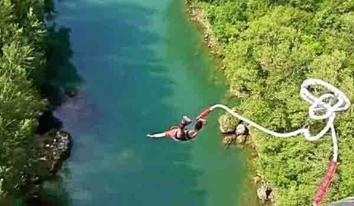
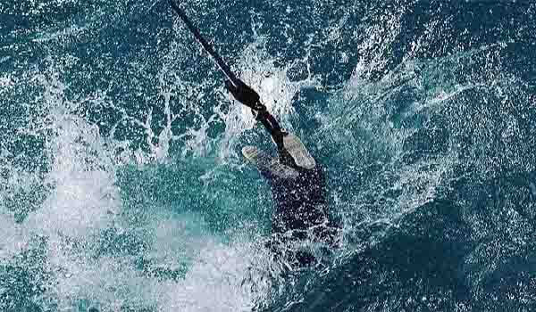

बंजी जंपिंग हा एक मनोरंजक आणि साहसी खेळ आहे यात सहभागींच्या पायात लवचिक दोरखंड बांधून उंची वरुन उडी मारली जाते, उडी मारताना डोकं खाली करून उडी घेतली जाते. ती उंच जागा इमारत, क्रेन, पूल किंवा हेलिकॉप्टर असू शकते. पहिली आधुनिक बंजी जंप १९७९ मध्ये होती आणि तेव्हापासून हा खेळ मोठ्या प्रमाणात लोकप्रिय झाला. बंजी जंपिंग हा एक अत्यंत आनंददायक क्रीडा प्रकार आहे आणि जगातील जवळजवळ प्रत्येक ठिकाणी उपलब्ध आहे.
बंजी जंपिंग हे भारतात तुलनात्मकदृष्ट्या नवीन आहे आणि काही मोजक्या ठिकाणी उपलब्ध आहेत. महाराष्ट्रात बंजी जंपिंग सुविधा २ ठिकाणी उपलब्ध आहे.
१. कोलाड बंजी जंपिंग :
आपल्याकडे पंख आहेत हे पटवून देण्यासाठी ही कोलाड बंजी जंप पुरेशी आहे !
फ्लायस्पोर्ट्सद्वारे कोलाड बंजी ही भारत / महाराष्ट्रातील पहिली पाण्यात बुडणारी बंजी आहे. कुंडलिका नदीच्या पाण्याच्या पातळीपासून जंपिंग प्लॅटफॉर्म ४० मीटर अंतरावर आहे. आपली उडी सुरक्षित आणि आनंददायक बनविण्यासाठी प्रशिक्षित दल जंपिंगच्या वेळी सर्व सुरक्षा प्रक्रियेचे अनुसरण करतात.
कोलाड गाव हे मुंबई व पुण्यापासून १२० कि.मी. अंतरावर आहे. मुंबईकर आणि पुणेकरांसाठी सुट्टीतील हे सर्वात आवडते ठिकाण आहे. कुंडलिका नदीकाठी साहसी खेळांमध्ये अमर्यादित पर्याय उपलब्ध आहेत. कोलाड इतर गोष्टींबरोबरच, हायकिंग, कॅम्पिंग आणि ट्रेकिंगसाठी देखील एक परिपूर्ण स्थान आहे
बंजी जंपिंग माहिती :
उंची : ४० मीटर
ठिकाण: कोलाड
२. डेला अॅडव्हेंचर, लोणावळा
पुण्याच्या हद्दीत एक लहान हिल स्टेशन, बंगी जंपिंगसाठी एक सुंदर स्थान आणि एक परिपूर्ण ठिकाण जे डेला अॅडव्हेंचर नावाच्या अॅडव्हेंचर पार्कमध्ये आहे. उपकरणे १५० फूट उंचीवर जोडली गेली आहेत आणि सुमारे ७-१० मिनिटे चालतात. ३५ किलोग्रॅमपेक्षा जास्त वजन असलेल्या आणि १० वर्षांपेक्षा जास्त वयाच्या लोकांना जंप करण्याची परवानगी आहे.
उडी मारण्यापूर्वी तज्ञ सर्व सुरक्षा उपायांचे स्पष्टीकरण देतात आणि सर्वात महत्त्वाचे म्हणजे आपल्याला या थरारक अनुभवानंतर आपण आपल्या भीतीवर यशस्वीरित्या विजय मिळविल्याचे सांगत प्रमाणपत्र देखील प्राप्त होते.
बंजी जंपिंग माहिती :
उंची : ४५ मीटर
सर्वोत्कृष्ट वेळ : वर्षभर